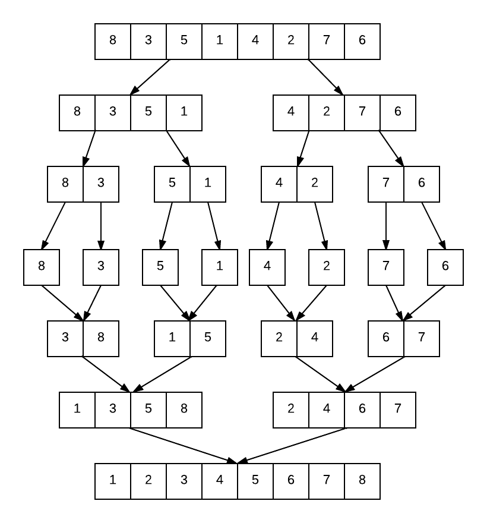
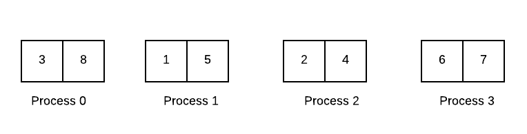
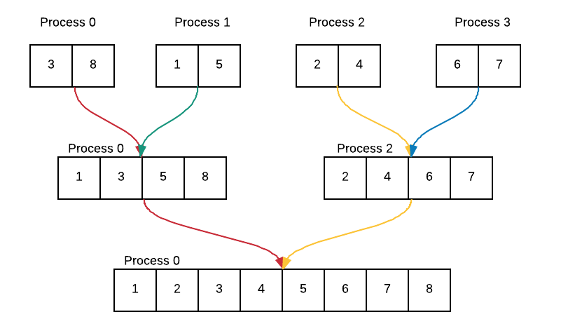
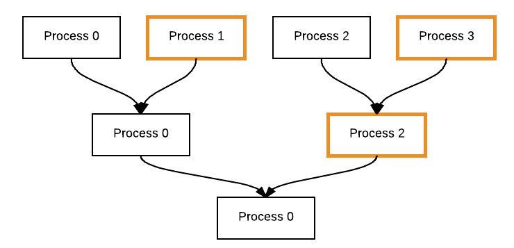
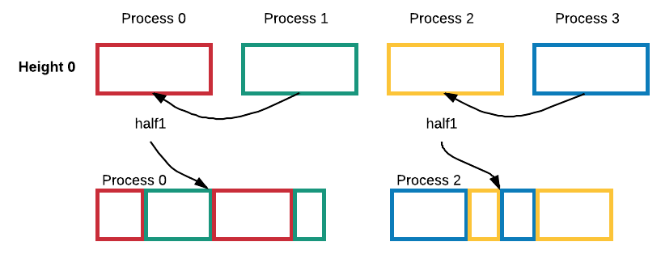

Merge Sort¶
The idea of merge sort is to divide an unsorted listed into sublists until each sublist contains only one element. These one element sublists are then merged together to produce new sorted sublists. When we have one sublist remaining, we are done and the list has been sorted. Conceptually, the algorithm works like this:
Parallel Algorithm¶
To parallelize this algorithm, we will use a mixed strategy in which the sublists are sorted by a sequential sorting algorithm and the merging of sublists is done in parallel between processes. We chose to stick with cases in which the number of processes is a power of two so that all processes are doing roughly the same amount of work.
Part I: Divide list into unsorted sublists
For this portion of the problem, we begin with a single unsorted list. This list is scattered to all of the processes such that each process has an equal chunk of the list. Suppose we have 4 processes and a list containing 8 integers. The code is executing as follows:

Part II: Sort sublists
We can sort these sublists by applying a serial sorting algorithm. We use the C library function qsort on each process to sort the local sublist. After sorting the processes have the following sorted sublists:
Part III: Merge sublists
The merging of the sublists to form a single list is done by sending and receiving sublists between processes and merging them together. Each initial sorted sublist (with a size of 2) provides the sorted result to the parent process. That process combines the two sublists to generate a list of size 4, and then sends that result to its parent process. Lastly, the root process merges the two lists to obtain a list of size 8 that is fully sorted.
Code¶
file: MPI_examples/mergeSort/mergeSortMPI/mergeSortMPI.c
Build insidemergeSortMPI directory:
make mergeSort
Execute on the command line inside mergeSortMPI directory:
mpirun -np <number of processes> ./mergeSort < list size >
Main Function¶
int main(int argc, char** argv) {
int numProcs, id, globalArraySize, localArraySize, height;
int *localArray, *globalArray;
double startTime, localTime, totalTime;
double zeroStartTime, zeroTotalTime, processStartTime, processTotalTime;;
int length = -1;
char myHostName[MPI_MAX_PROCESSOR_NAME];
MPI_Init(&argc, &argv);
MPI_Comm_size(MPI_COMM_WORLD, &numProcs);
MPI_Comm_rank(MPI_COMM_WORLD, &id);
MPI_Get_processor_name (myHostName, &length);
// check for odd processes
powerOfTwo(id, numProcs);
// get size of global array
getInput(argc, argv, id, numProcs, &globalArraySize);
// calculate total height of tree
height = log2(numProcs);
// if process 0, allocate memory for global array and fill with values
if (id==0){
globalArray = (int*) malloc (globalArraySize * sizeof(int));
fillArray(globalArray, globalArraySize, id);
//printList(id, "UNSORTED ARRAY", globalArray, globalArraySize); // Line A
}
// allocate memory for local array, scatter to fill with values and print
localArraySize = globalArraySize / numProcs;
localArray = (int*) malloc (localArraySize * sizeof(int));
MPI_Scatter(globalArray, localArraySize, MPI_INT, localArray,
localArraySize, MPI_INT, 0, MPI_COMM_WORLD);
//printList(id, "localArray", localArray, localArraySize); // Line B
//Start timing
startTime = MPI_Wtime();
//Merge sort
if (id == 0) {
zeroStartTime = MPI_Wtime();
globalArray = mergeSort(height, id, localArray, localArraySize, MPI_COMM_WORLD, globalArray);
zeroTotalTime = MPI_Wtime() - zeroStartTime;
printf("Process #%d of %d on %s took %f seconds \n",
id, numProcs, myHostName, zeroTotalTime);
}
else {
processStartTime = MPI_Wtime();
mergeSort(height, id, localArray, localArraySize, MPI_COMM_WORLD, NULL);
processTotalTime = MPI_Wtime() - processStartTime;
printf("Process #%d of %d on %s took %f seconds \n",
id, numProcs, myHostName, processTotalTime);
}
//End timing
localTime = MPI_Wtime() - startTime;
MPI_Reduce(&localTime, &totalTime, 1, MPI_DOUBLE,
MPI_MAX, 0, MPI_COMM_WORLD);
if (id == 0) {
//printList(0, "FINAL SORTED ARRAY", globalArray, globalArraySize); // Line C
printf("Sorting %d integers took %f seconds \n", globalArraySize,totalTime);
free(globalArray);
}
free(localArray);
MPI_Finalize();
return 0;
}
| Comments: |
|
|---|
To do:
- Test code: Uncomment lines A, B and C. Run and compile the code using a small integer
- for the size of the list to insure that the list is being sorted correctly. Once you are confident that the final list is sorted the right way, recomment the lines.
- Analysis: Compile and run the sequential version of merge sort located in the
- mergeSort/mergeSortSeq directory using 4, 8, 16, 32, 64 million for the list size. Record sequential time. Next, try running the parallel program with 2, 4, 8 processes and 4, 8, 16, 32, 64 million for the list size. Record parallel time for each. Can you answer whether merge sort displays good scalability, speedup and efficiency? Explain your answer.
Merging Sublists¶
There are several functions that play an integral role in merging including mergeSort, Compare and merge. We will walk through the mergeSort function and explain how it works.
mergeSort Function¶
Setup
Each process calls and sends the appropriate arguments to mergeSort from main. In the mergeSort function, we begin by setting the process’ individual height to 0 and sorting its portion of the list using qsort with the simple Compare function. We assign a pointer, half1, to the process’ sublist that was just sorted.
Loop
Next, we enter a loop that will continue until we have reached the total number of levels needed to have a single sorted list. Within the loop, we find the parent of the current process. This will determine whether or not the current process is a left child or right child of the parent. Note that a left child and its parent will be same process. The diagram below shows how children and parents are related. For example, process 0 is the left child and process 1 is the right child (as indicated by its orange outline) of parent process 0.
Depending on the child status of the process, the process will do the following:
Left Child:
- Find right child
- Allocate memory needed for storing right child’s list in half2
- Receive right child’s list in half2
- Allocate memory needed for result of merging lists in mergeResult
- Merge half1 and half2 into mergeResult with merge function
- Reassign half1 to point to mergeResult
- Free memory for half2
- Set mergeResult to NULL
- Increase process height by 1
Right Child:
- Send current process’ portion of list to parent
- Set process height to overall height - DONE!
The left child is the process that is actually taking part in the merging. In comparison, the right child simply sends its list portion to its parent (left child). Once it has done this, the process is now finished - it has nothing else to do! This loop continues until each process’ individual height reaches the overall height required to guarantee that we have a single sorted list.
Visual Example¶
This simple example follows the mergeSort algorithm. Assume each colored box represents a single process’ current sorted sublist, localArray.
Setup¶
With four processes, the setup looks like this:

Each process has half1 initially pointing to its sorted portion of the list.
Loop at Height 0¶
Notice that half1 is reassigned to point to the result of the merge. Let’s take a closer look at part of the communication process between Process 0 and Process 1 at height 0. These two processes are executing at the same time. In the diagram below time is moving from top to bottom.

For the next height, height 1, Process 0 has access to the merged array through half1.
End at Height 2¶

Code¶
int* mergeSort(int height, int id, int localArray[], int size, MPI_Comm comm, int globalArray[]){
int parent, rightChild, myHeight;
int *half1, *half2, *mergeResult;
myHeight = 0;
qsort(localArray, size, sizeof(int), compare); // sort local array
half1 = localArray; // assign half1 to localArray
while (myHeight < height) { // not yet at top
parent = (id & (~(1 << myHeight)));
if (parent == id) { // left child
rightChild = (id | (1 << myHeight));
// allocate memory and receive array of right child
half2 = (int*) malloc (size * sizeof(int));
MPI_Recv(half2, size, MPI_INT, rightChild, 0,
MPI_COMM_WORLD, MPI_STATUS_IGNORE);
// allocate memory for result of merge
mergeResult = (int*) malloc (size * 2 * sizeof(int));
// merge half1 and half2 into mergeResult
mergeResult = merge(half1, half2, mergeResult, size);
// reassign half1 to merge result
half1 = mergeResult;
size = size * 2; // double size
free(half2);
mergeResult = NULL;
myHeight++;
} else { // right child
// send local array to parent
MPI_Send(half1, size, MPI_INT, parent, 0, MPI_COMM_WORLD);
if(myHeight != 0) free(half1);
myHeight = height;
}
}
if(id == 0){
globalArray = half1; // reassign globalArray to half1
}
return globalArray;
}

{kind=link}
{kind=link}
{kind=link}
{kind=link}
{kind=link}
{kind=link}